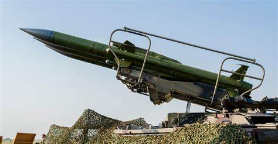

Fundada en 2006, la Dirección de Armas de Destrucción Masiva (WMDD) es parte de la División de Seguridad Nacional del FBI y es la entidad responsable de coordinar la integración de políticas, investigaciones, inteligencia y contramedidas relacionadas con las armas de destrucción masiva.
¿Qué significa?
El término "armas de destrucción masiva" suele referirse a todas las modalidades de armas químicas, biológicas, radiológicas, nucleares o explosivas (QBRNE). Estas armas pueden tener un impacto a gran escala sobre las personas, las propiedades o la infraestructura.
